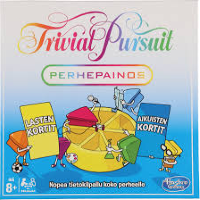
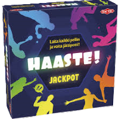
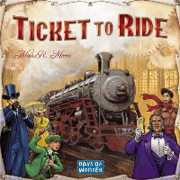
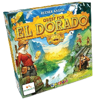

TRIVIAL PURSUIT PERHEPAINOS
Trivial Pursuit on kaikkien triviapelien kuningas. Kysymyksiä tässä perhepainoksessa on 2400. Puolet kysymyksistä on suunnattu aikuisille ja puolet lapsille. Peli tarjoaa siis tasapuoliset mahdollisuudet kaikille perheenjäsenille. Jos teillä on jo Trivial pursuit kotona, mutta sille on kertynyt jo ikää, on suositeltavaa päivittää peli, koska kysymyksissä voi olla vanhentunutta tietoa. Pelissä on mahdollista haastaa toinen pelaaja kaksintaisteluun, jolla voi varastaa toisen pisteen. Trivialin perhepainoksessa on hauskinta uuden oppiminen. Lasten kysymyksien seassa on opettavaa tietoa myös vanhemmille. Tämän version pelaamisen voi aloittaa heti, kun lapset osaavat lukea. Välillä eteen tulee englanninkielisiä sanoja tai muuten hankalia sanoja, niin vanhemmat voivat joutua hieman auttamaan lausumisessa.Lasten kommentit: ”Kaksintaistelut on kivoja, koska jos toinen vastaa väärin, niin siitä menettää pisteen."
HAASTE JACKPOT
Haaste jackpotissa on fyysisiä ja ajatustyötä vaativia tehtäviä. Tehtävät suoritetaan aina jonkun toisen pelaajan kanssa pareittain ja pelaajat, jotka eivät suorita tehtävää lyövät vetoa onnistuuko suorittajat vai eivät. Jos vedonlyönti onnistuu pelaaja saa panostamansa summan tuplattuna takaisin. Jos vedonlyönti ei onnistu, saavat suorittavat pelaajat panostetun summan itselleen. Haaste jackpot on hauska perhepeli, koska tehtäviin ja kysymyksiin on helpotettu versio lapsia varten olematta kuitenkaan liian helppoja. Pelin nimen mukaisesti peli on haastava. Tehtäviä ja haasteita on runsaasti, joten pelikertoja on reilusti ennen kuin kortit alkavat toistumaan. Haaste jackpotin ikäsuositus on 8+ ja meidän kokemuksesta sen pelaamisen voi aloittaa jo 7-vuotiaana. Koordinaatiota vaativat tehtävät voivat olla haasteellisia pienemmille, mutta pelin nimihän on HAASTE jackpot, joten ei siinä helpolla pidä päästäkään!Lasten kommentit: ”Siinä on kivoja tehtäviä ja niitä tehdessä on kivaa”
TICKET TO RIDE / MENOLIPPU
Meidän perheessä on jo neljä versiota Ticket to ridestä. Alkuperäinen Ticket to ride, Ticket to ride EUROPE, Ticket to ride NORDIC COUNTRIES ja Ticket to ride FIRST JOURNEY (lasten versio). Ticket to ridestä on tehty jo monen monta versiota, joten jokaiselle pelaajalle löytyy varmasti oma lempi versionsa. Säännöt ovat pieniä poikkeuksia lukuun ottamatta samat kuin alkuperäisessä Ticket to ridessä. Pelin tarkoituksena on yhdistää Pohjois-Amerikassa, tai siihen liittyvällä mantereella minne pelin versio sijoittuu, sijaitsevia kaupunkeja toisiinsa rautatieverkon avulla. Pelissä saadaan pisteitä kaupunkien yhdistelyn lisäksi radan rakentamisesta ja pisimmän yhtenäisen rautatieketjun omistamisesta. Peruspelin, Ticket to ride, ikäsuositus on 8+, mutta sen voi hyvin aloittaa jo huomattavasti aikaisemmin. Jos lapsella on kokemusta yksinkertaisemmista peleistä tähän siirtyminen on helppoa. Omat lapsemme aloittivat lasten versiolla pelistä, mikä auttoi hyvin heitä sisäistämään pelin idean. Lisänimen kanssa varustetut versiot esittelee peleihin joitain pieniä lisäsääntöjä, mutta ne ovat riittävän helpot, että pienemmätkin pelaajat varmasti sisäistävät ne nopeasti.Lasten kommentit: ”Siinä pystyy tukkimaan toisten reittejä, että muiden pelistä tulee vaikeampaa”
THE QUEST FOR EL DORADO
The Quest for El Dorado on kilpajuoksupeli. Liikkumisesi määräytyy korttipakan mukaan, jonka rakennat ja kehität kilpailun aikana. Ensimmäinen pelaaja, joka pääsee maaliin, voittaa. Vuorollaan pelaajat nostavat neljä korttia omasta pakastaan ja käyttävät niitä liikkumiseen tai ostavat niillä uusia kortteja. Kun pelaajan nostopakassa ei ole enää kortteja, aikaisemmin pelatut kortit sekoitetaan ja uusi nostopakka muodostuu. Quest for El Doradossa parasta on taktikointi ja riskien ottaminen. Jos aloitat pelin kehittämällä pakkaasi, saatat jäädä liikkumisessa pahasti jälkeen ja pelin loppu puolisko voi olla vaikea. Jos taas lähdet heti liikkeelle tuhatta ja sataa, voi olla, että pakassasi ei ole tarvittavia kortteja murtamaan itsesi läpi pelilaudan haasteista. Jos joudut kehittämään pakkaasi kesken pelin voivat muut pelaajat saada sinut kiinni ja viedä voiton nenän edestäsi. Ikäsuositus on +10, mutta rohkeasti voi aloittaa jo ekaluokkalaisten kanssa pelaamaan!Lasten kommentit: ”Siinä on kiva ostella uusia kortteja, niin pääsee helpommalla ja pitää taktikoida.”
